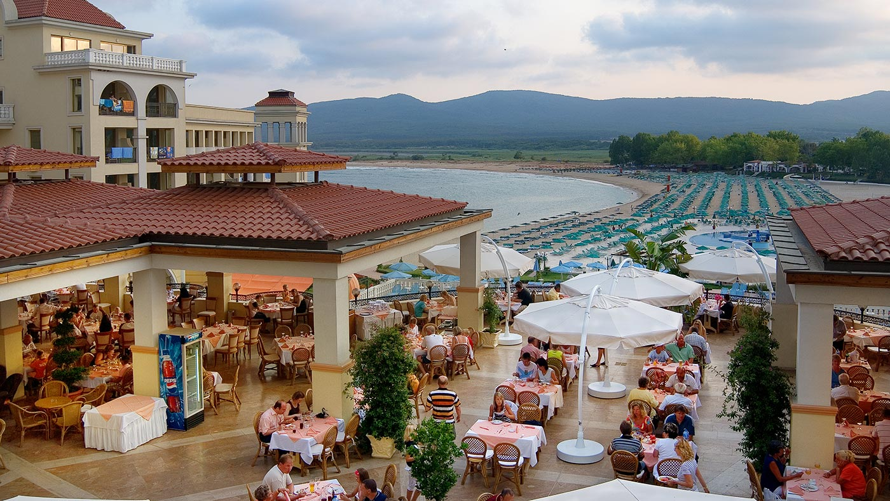

Ресторанти
Ресторант “Марина Роял Палас”
Eлегантен и стилен, с открита тераса, създаден така, че да отговори на всички Ваши очаквания! Поставете едно добро начало на лятната си ваканция. Открийте приказната гледка към морския залив и златната плажна ивица по време на закуска или наслаждавайки се на изискана вечеря.Интериорът е хармоничен диалог между аристократична атмосфера и модерен дух. Кралските цветове напомнят за изискания и дискретен свят на успелите хора през всяка епоха. Отличното обслужване, богатата селекция от изтънчени ястия и напитки и акомпаниментът на тиха музика Ви обещават светли емоции и незабравими спомени. Ресторантът разполага с 280 места в прохладната зала и 280 места на слънчева тераса със спираща дъха гледка към морския залив. За ваше удобство на разположение по време на храненията е и барът към ресторанта.
Ресторант “Марина Бийч”
Ресторант “Марина Бийч” Ви позволява в луксозен и изискан уют да се насладите на бюфет с множество кулинарни шедьоври, презентирани по необикновен начин и в съчетание с изключително вкусни десерти. Изисканото обслужване и незабравимият вкус са визитната картичка на този ресторант! Отпуснете се в елегантната феерия от топли цветове и приятна музика в просторната зала с 260 места или се полюбувайте на прекрасна гледка към морето от слънчевата лятната тераса с 500 места, предоставяща на своите гости невероятно чувство за лекота и спокойствие.
Лоби бар “Белвил”
Лоби бар “Белвил” е мястото, където по всяко време може да се отпуснете с чаша ароматна напитка и да се насладите на разнообразието от алкохолни и безалкохолни коктейли, аперитиви, дижестиви, фрешове, уникална колекция от качествени малцови уискита. Атмосферата и обзавеждането придават усещане за спокойствие и домашен уют. Комфортният и същевременно луксозен интериор на лоби бара, го прави идеално място за краткотрайна почивка или приятелски разговори.